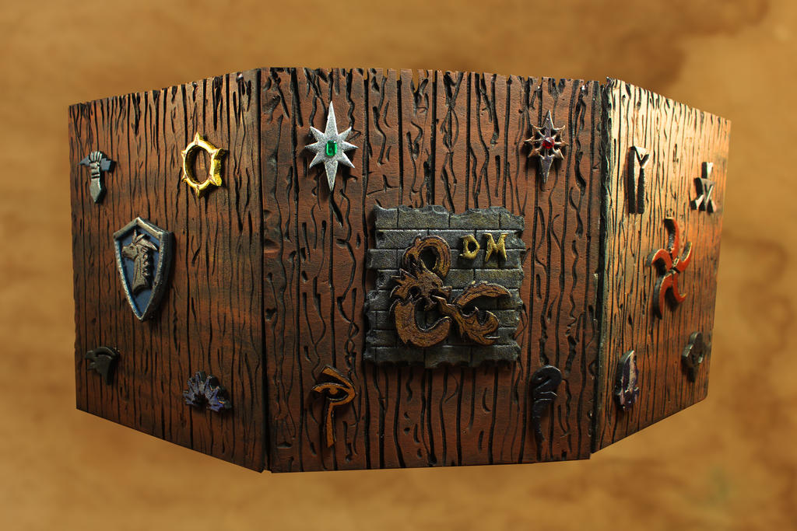
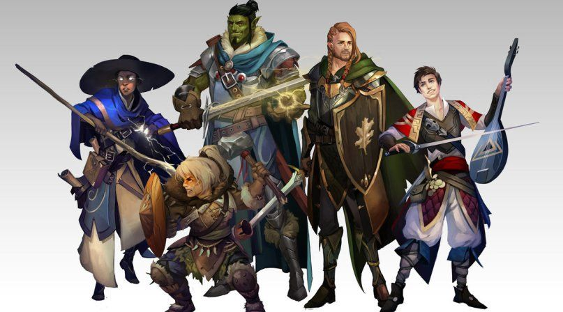

De que se trata
El objetivo del juego de rol Dungeons & Dragons (D&D) es contar historias en mundos de espada y brujería. Al igual que los juegos de niños en los que estos fingen ser personajes ficticios, como el de indios y vaqueros, el motor de D&D es la imaginación: visualizar el imponente castillo bajo el tormentoso cielo nocturno e imaginar cómo un aventurero de fantasía podría reacciona r a los desafíos que la escena le plantea.
El Dungeon Master
Un jugador asume el papel del Dungeon Master (DM, Señor de la Mazmorra en español): el narrador principal y árbitro del juego. El DM crea aventuras para los personajes, que se enfrentan a las dificultades y deciden qué caminos explorar.
Los personajes
En una partida de Dungeons & Dragons cada jugador crea un aventurero (también llamado personaje) y forma equipo con otros aventureros (controlados por amigos). Trabajando juntos, el grupo podría explorar una oscura mazmorra, una ciudad en ruinas, un castillo encantado, un templo perdido en las profundidades de la selva o una caverna llena de lava bajo una misteriosa montaña. Los aventureros pueden resolver acertijos, hablar con otros personajes, luchar contra monstruos fantásticos y descubrir fabulosos objetos mágicos y otros tesoros.
